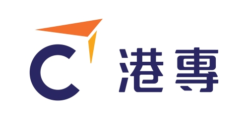
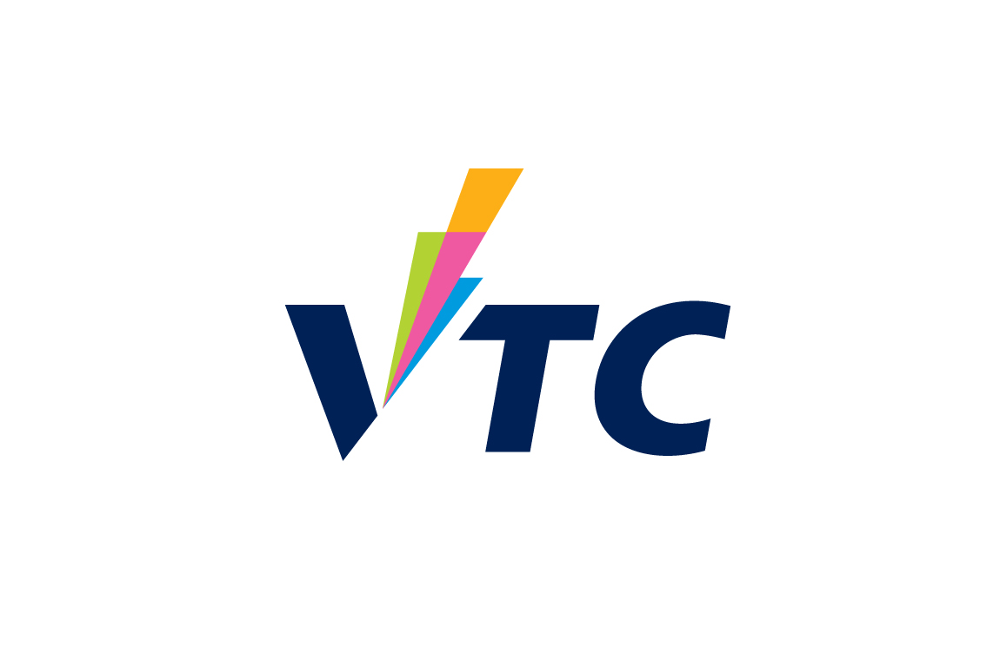

HKBCOL 2024 Tertiary Division
Solutions Design Competition for the current and recent tertiary students of HK
Preface
The International Data Science Olympiad ("IDSOL 2024") invites current and recent students to design comprehensive data science solutions for real-world challenges. The International Data Science Olympiad ("IBSOL") is the official organizing committee for the Hong Kong Special Administrative Region of the People's Republic of China ("Hong Kong SAR China" or "HKSAR").
Mission Statement
To support the Government of Hong Kong SAR China in helping Hong Kong develop into a data science hub by encouraging and equipping the next generation of innovative and inquisitive minds to direct their creativity and passion for designing data science solutions for sustainable development for Hong Kong through the following objectives by:
- encouraging and equipping the next generation of innovative and inquisitive minds to direct their creativity and passion for designing data science solutions for sustainable development for Hong Kong;
- fostering a sustainable innovation and technology culture in the community by offering and subsidizing training, internships, and certification to young people in Hong Kong; and,
- upgrading and developing Hong Kong's industries through academic-industry collaborations at both grassroots and institution levels.
Notice
The International Data Science Olympiad ("IDSOL 2024") would like to address the spread of misinformation regarding IDSOL and IBCOL in Hong Kong SAR China ("IBCOL"). Please be cautious of individuals or organisations claiming to represent IDSOL without proper authorisation or documentation. This extends to unsubstantiated allegations against persons affiliated with IBCOL in Hong Kong SAR, China.
All participants of IDSOL are reminded that countries and territories with official organising committees will have the necessary documentation to authorise their representation. Participants must adhere to the processes set forth by the official committees to compete and qualify.
If you are unsure whether a website or communication you have received is legitimate, please contact us.
The HKSAR Government is actively developing Hong Kong into a global startup hub, allocating funds to expedite the data science ecosystem.
Meanwhile, many industries and careers face unprecedented upheaval with the advent of AI playing an increasing role in the workforce.
As students projecting their lives and livelihoods years and decades into an uncertain future, one thing is certain: only the earnest development of marketable skills can alleviate anxiety.
Previous olympiad alumni have successfully worked as solution architects, product designers, product developers, tech consulting, management consulting, and tech startup founders.
The competition standards of IDSOL are completely aligned with the international guidelines stipulated at the IBCOL 2024 website.
- TEAM — form a group of 1 to 6 eligible participants
- IDEA — identify a problem and describe a solution
- DONE — submit a deck, a paper, a video
- FINAL — if invited to join Team HK, submit poster
If you are not from Hong Kong or attending school in Hong Kong, please refer to the official website of the International Data Science Olympiad (IDSOL 2024).
Current students and recent students within 3 years of active enrolment at a higher-education institution in HKSAR.
If you are a current student or recent student of a local or international school at the secondary level in HKSAR, please refer to the HKBCOL 2024 Secondary Track process from The Hong Kong Academy for Gifted Education ("HKAGE").
The IDSOL 2024 Organizing Committee shall not charge entry fees for participating in the IDSOL 2024 Competition and shall cover all registration and administration fees arising from the International Data Science Olympiad, but shall not be responsible for covering the cost of travel nor accommodations for Team Hong Kong in Amsterdam.
If you require a chaperone service for accompanying your team to travel to Amsterdam, please contact us
If you are interested to partially or fully sponsor Team Hong Kong's travel to Amsterdam, please contact us
IDSOL 2024 is responsible for assembling the competition delegation from Hong Kong SAR China to IDSOL 2024 in Amsterdam, Netherlands.
- Option 1 — Represent HKSAR as a Permanent Resident: the participating individual is granted the status of permanent residency in HKSAR by the Immigration Department.
- Option 2 — Represent HKSAR as a Current or Former Student: the participating individual was or is a student at an accredited higher education institution in HKSAR:
- The University of Hong Kong (HKU)
 The Hong Kong University of Science and Technology (HKUST)
The Hong Kong University of Science and Technology (HKUST) The Chinese University of Hong Kong (CUHK)
The Chinese University of Hong Kong (CUHK)- City University of Hong Kong (CityU)
 The Hong Kong Polytechnic University (PolyU)
The Hong Kong Polytechnic University (PolyU) Hong Kong Baptist University (HKBU)
Hong Kong Baptist University (HKBU)- Lingnan University (LU / LN / LU)
- Hang Seng University of Hong Kong (HSUHK)
- The Education University of Hong Kong (EdUHK)
- Hong Kong Shue Yan University (HKSYU)
- Hong Kong Metropolitan University (HKMU)
 The University of Hong Kong School of Professional and Continuing Education (HKU SPACE)
The University of Hong Kong School of Professional and Continuing Education (HKU SPACE)- City University of Hong Kong School of Continuing and Professional Education (CityU SCOPE)
- Chu Hai College of Higher Education (CHC)
- Tung Wah College (TWC)
- Hong Kong Nang Yan College of Higher Education (HKNYC)
- University of Wollongong College Hong Kong (UOWCHK)
- The Hong Kong Academy for Performing Arts (HKAPA)
- Gratia Christian College (GCC)
- Hong Kong College of Technology (HKCT)
- Technological and Higher Education Institute of Hong Kong (THEi)
- Saint Francis University (SFU)
- Hong Kong Institute of Vocational Education (IVE)
- Vocational Training Council (VTC)
- Exclusive Representation: representatives of HKSAR that have been submitted to the IDSOL 2024 Organizing Committee by the IDSOL 2024 Organizing Committee may not represent any other country or territory for IDSOL 2024.
- Register Name: provide your name as follows:
- First Name / Given Name / Forename
- Middle Name (optional)
- Last Name / Family Name / Surname
- Preferred Name Order: provide your name as follows:
- First Name, Middle Name, LAST NAME ("Western order")
- LAST NAME, First Name, Middle Name ("Eastern order")
Individuals must meet the following eligibility criteria for their team to be eligible to compete in HKBCOL 2024.
- Current secondary-level schooler ("schooler"): an individual of any age enrolled in a secondary-level academic institution (ISCED 2011 level 2-4) — if you are such an individual, please visit the HKBCOL 2024 Secondary Track.
- Current tertiary-level student ("student"): an individual of any age enrolled in a tertiary-level academic institution (ISCED 2011 level 5-8) — if you are such an individual, please stay on this page and keep reading.
- Recent academic graduate ("recent schooler" or "recent student"): an individual of any age that was either a schooler or student until the 30th of November 2021. Recent schoolers compete in the Secondary Track and recent students compete in the Tertiary Track — if you are a recent secondary schooler, please visit the HKBCOL 2024 Secondary Track, otherwise please stay on this page and keep reading.
- Returning Participation: an individual who has previously participated in prior IBCOL competitions (in Hong Kong SAR or elsewhere) are eligible to participate.
- Register Name: provide your name as follows:
- First Name / Given Name / Forename
- Middle Name (optional)
- LAST NAME / FAMILY NAME / SURNAME
- Preferred Name Order: provide your name as follows:
- First Name, Middle Name, LAST NAME
- LAST NAME, First Name, Middle Name
Teams must meet the following eligibility criteria for their projects to be eligible to compete in IDSOL 2024.
- Team Size: minimum 1 individual; maximum 6 individuals.
- Team Lead: each team must have one team leader who shall also be the key point of contact.
- Team Type: a team with at least one current or recent student shall be treated as a Tertiary Track submission.
- Team Representation: the team leader must be an eligible participant as per the individual eligibility rules, i.e. able to represent HKSAR. For representatives based on their academic institution, the team leader must provide a letter of nomination from a representative of their academic institution.
- Returning Participation: a team who has previously participated in prior IDSOL competitions (in Hong Kong SAR or elsewhere) are eligible to participate.
- Unique Composition: teams may not be more than 50% identical to another team.
Projects must meet the following eligibility criteria for their projects to be eligible to compete in IDSOL 2024.
- Unique Submission: A team may submit only one project.
- Project Category: Select up to three categories that describe your project, according to the 17 Sustainable Development Goals (SDG) of the United Nations (UN). The IDSOL 2024 Organising Committee reserves the right to assign categories of the project.
- Returning Participation: Previous projects that have not won any awards from prior IBCOL or HKBCOL olympiad competitions (in Hong Kong SAR or elsewhere) are eligible to compete in IDSOL.
IDSOL 2024 teams separate their projects into three categories:
- Social Impact: primarily SDG 2,3,4,5,10,16; secondarily SDG 1,8,13,14,15.
- Economic Impact: primarily SDG 1,8,9,11,17; secondarily SDG 2,3,4,5,6,7,10,12,16.
- Environmental Impact: primarily SDG 6,7,12,13,14,15; secondarily SDG 9,11,17.
- HKBCOL 2024 teams select up to 5 SDG (ranked by order of impact).
- HKBCOL 2024 Organising Committee reserves the right to reassign projects to new SDG.
IDSOL 2024 teams shall use guiding questions to guide the project conception and development in the form of a properly formatted paper:
- Problem Statement: issues, impact, process flows, overall situation, etc.
- States-of-the-Art Overview: current tech/product levels, competitive analysis, etc.
- Solution Overview: why blockchain, how blockchain, features, benefits, impact, etc.
- Solution Design: stakeholders, process flows, architecture, technology, governance, etc.
- Challenges: risks, liabilities, mitigations, adoption, scalability, next steps, etc.
IDSOL 2024 teams shall submit materials for a chance to show their quality:
- Sub 1 (“Proposal”): one PDF file; slide deck; 16:9 ratio; unlimited slides.
- Sub 2 (“Paper”): one PDF file; guiding questions in A4 IEEE conference format, 4 pages max; appendices in any format, unlimited pages.
- Sub 3 (“Pictures”): YouTube unlisted URL; video; 16:9 ratio; 3 minutes (180 seconds) limit.
- Sub 4 (“Poster”): one PDF file; A2 portrait (“vertical”) format; final size & orientation subject to change by EPC.
Submission portal shall open on Thursday 1 August 2024 and projects shall be evaluated on a rolling basis. The Competitions Committee may contact teams for clarification or secondary inspection during the evaluation period. Note the submission deadline of Saturday 31 August 2024 at 23:59 HKT. Late submissions without reasonable explanation such as force majeure shall not be entertained.
IDSOL 2024 teams shall be evaluated by a common foundational framework for comparing vastly different projects.
- (40%) Commercial Depth: justified use of trust infrastructure and appropriate blockchain network design; feasible, viable, and sustainable operating and governance model.
- (30%) Technical Depth: detailed and well thought out in the solution design, beyond only business or only technology.
- (20%) Presentability: concise information transmission and ability to express complex concepts.
- (10%) Originality: the ability to combine different concepts into something atypical or special.
IDSOL 2024 teams have a chance to win a wide range of accolades and be presented at an award ceremony around the end of November to early December. Performance at IBCOL will significantly contribute to the final decision of IDSOL 2024 Organizing Committee to invite the team to attend the IDSOL 2024 Finals in Amsterdam, but not a guarantee due to other existing factors.
- By Categories, i.e. by social, economic, and environmental impact:
- IDSOL 2024 Finals, Gold Medal Award: project ranked 1st out of all teams in their category
- IDSOL 2024 Finals, Silver Medal Award: project ranked 2nd out of all teams in their category
- IDSOL 2024 Finals, Bronze Medal Award: project ranked 3rd out of all teams in their category
- IDSOL 2024 Finals, Awards of Distinction: for all teams that were in the consideration for Top 4
- IDSOL 2024 Finals, Awards of Merit: for all teams that demonstrated superior achievement at the Expo
- IDSOL 2024 Finals, Award of Recognition: for all teams that were invited to the Expo but did not receive an AoM
- IDSOL 2024 Preliminary, Award of Recognition: for all teams that were considered for the Expo but not chosen
- By Criteria (and 2 runner-ups), i.e. across all categories, by evaluation criteria:
- IDSOL 2024 Finals, Best Commercial Depth Award: for teams that demonstrated the most solid solution design overall, completely justifying the use of decentralized trusted infrastructure and excellent governance and identity considerations.
- IDSOL 2024 Finals, Best Technical Depth Award: for teams that demonstrated the most robust and resilient solution architecture design, incorporating all aspects of business, technology, and otherwise.
- IDSOL 2024 Finals, Best Presentability Award: for teams that had completely seized all the chances to show their quality: proposal deck, paper, pictures (video), poster, and pitches.
- IDSOL 2024 Finals, Best Originality Award: for teams that had the most creative or novel solution or definition of problem or challenge statement.